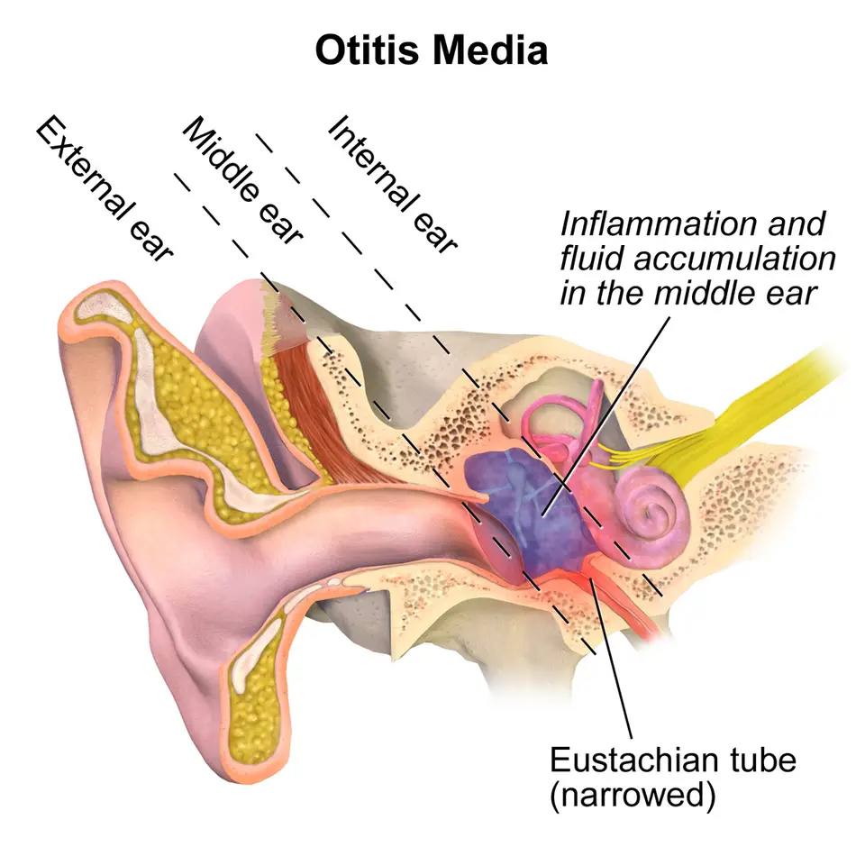

DX.2 — Otite moyenne avec épanchement
L'otite moyenne avec épanchement remplit la caisse du tympan de liquide sans infection aiguë et provoque une surdité de transmission, surtout chez le petit enfantS1S6. Le médecin mesure l'audition, surveille trois mois, puis choisit entre aide auditive et aérateurs, sans antibiotique ni corticoïdeS4S6.
1. Définition
En 2023, une équipe du Centre hospitalier universitaire vaudois (CHUV) définit dans Paediatrica l'otite séro-muqueuse comme la présence de liquide dans l'oreille moyenne sans signes d'infection aiguëS1. Les auteurs la qualifient de chronique lorsqu'elle persiste plus de 3 moisS1.
La Société française d'oto-rhino-laryngologie (ORL) précise dans sa recommandation de 2025 qu'il s'agit d'une otite moyenne à tympan fermé avec épanchement rétrotympanique persistant depuis plus de 3 moisS6. Le National Institute for Health and Care Excellence (NICE) britannique utilise le terme anglais otitis media with effusion, aussi appelé glue earS4.
2. Épidémiologie (Suisse, puis Europe)
Paediatrica décrit l'épanchement comme extrêmement fréquent dans la petite enfance, puisqu'il touche environ un enfant sur quatre avant 12 moisS1. La synthèse française indique qu'il complique 10 à 20 % des otites moyennes aiguës (OMA) et toucherait plus de la moitié des enfants de moins d'un anS6. Le rang de fréquence de la Phase A repose sur une déduction argumentée, car les sources citées ne chiffrent pas la prévalence suisse chez l'adulte.
La prévalence s'élève nettement lorsque la trompe auditive fonctionne mal de façon chronique, en particulier dans la trisomie 21 et la fente palatineS6. Le retentissement prend une dimension de santé publique, car la perte moyenne de 18 à 35 dB peut retarder le langage et freiner la scolaritéS6. Les chiffres utiles, le terrain exposé et l'histoire naturelle s'ouvrent dans des fenêtres.
Chiffres utiles : Suisse, puis Europe
| Donnée | Valeur | Population et année | Source |
|---|---|---|---|
| Enfants touchés avant 12 mois | Environ un sur quatre | Petite enfance, Suisse romande, 2023 | S1 |
| Part des OMA compliquées d'un épanchement | 10 à 20 % | Enfants, France, 2025 | S6 |
| Enfants de moins de 2 ans touchés | 60 % | Enfants, France, 2025 | S6 |
| Perte auditive moyenne | 18 à 35 dB | Enfants, France, 2025 | S6 |
| Perte maximale habituelle | Dépasse rarement 50 dB HL (hearing level) | Enfants, France, 2025 | S6 |
| Perforation résiduelle après aérateurs | 1 à 6 % des cas | Enfants opérés, France, 2025 | S6 |
| Cholestéatome acquis de l'enfant | 5 à 15 pour 100 000 enfants par an | Enfants, Suisse romande, 2023 | S1 |
Ces chiffres montrent qu'un pédiatre ou un médecin de famille rencontre l'épanchement presque chaque semaine, alors que le cholestéatome reste rareS1S6. La perte rarement supérieure à 50 dB HL sert de repère : une perte plus profonde oblige à chercher une autre causeS6.
Terrain exposé et facteurs de risque
| Facteur | Mécanisme ou lien | Conséquence pratique | Source |
|---|---|---|---|
| Infections des voies aériennes supérieures et OMA à répétition | La muqueuse enflammée bouche la trompe et retient les sécrétions | On suspecte l'épanchement après chaque rhume ou OMA | S1S4 |
| Trisomie 21, fente palatine, anomalie craniofaciale | La trompe fonctionne mal de façon chronique | On prévoit un suivi auditif individualisé | S4S6 |
| Asthme, eczéma, rhinite, urticaire, conjonctivite | Terrain atopique associé dans le guide NICE | On élève le niveau de suspicion | S4 |
| Succion de tétine ou de doigt, biberon, respiration buccale, ronflement | Habitudes associées à l'épanchement | On interroge les parents sur ces habitudes | S4 |
| Exposition au tabac | Le guide NICE y voit un risque accru | On conseille d'éviter la fumée autour de l'enfant | S4 |
| Reflux gastro-œsophagien | Facteur favorisant reconnu par la société française | On le recherche seulement devant des signes évocateurs ou après 7 ans | S6 |
| Garde en collectivité | Exposition répétée aux infections respiratoires | On note le mode de garde à l'anamnèse | S6 |
Le NICE rappelle qu'un épanchement devient moins probable sans obstruction nasale, sans rhinorrhée et sans hypertrophie des végétationsS4. Cette absence ne l'exclut pourtant jamais, car aucun de ces signes ne garantit le diagnosticS4.
Histoire naturelle
Après une OMA, l'épanchement reste fréquent et bénin ; Paediatrica indique qu'on peut encore l'objectiver jusqu'à 3 mois plus tardS1. Le NICE explique aux parents que l'épanchement sans perte auditive guérit souvent seul, si bien qu'aucun traitement n'est nécessaireS4.
| Étape | Ce qui se passe | Source |
|---|---|---|
| Semaines suivant une OMA | Le liquide persiste ; l'antibiotique réduit les tympanométries anormales à 2 à 8 semaines, mais pas à 3 mois | S1 |
| 3 mois | L'épanchement devient chronique s'il persiste ; le NICE réévalue alors l'audition | S1S4 |
| Persistance prolongée | La membrane tympanique peut se rétracter et altérer l'audition | S1 |
| Dysfonction tubaire chronique | Des poches de rétraction peuvent conduire au cholestéatome acquis, qui se traite chirurgicalement | S1 |
Cette évolution justifie une surveillance active plutôt qu'un traitement immédiat, puisque la majorité des épanchements disparaissent sans gesteS4. Elle impose aussi de revoir le tympan, parce qu'une rétraction persistante prépare la complication grave du DX.9S1.
3. Physiopathologie
La trompe auditive, ou trompe d'Eustache, est le conduit qui relie la partie antérieure de l'oreille moyenne au rhinopharynxS1. Elle permet l'aération de la caisse et le drainage de ses sécrétionsS1. Lors d'une infection des voies aériennes supérieures, un œdème inflammatoire de la muqueuse du rhinopharynx obstrue la trompe et fait stagner les sécrétionsS1.
L'épanchement survient donc souvent après une OMA, mais il peut aussi naître d'une dysfonction tubaire primaire chez le petit enfantS1. Le liquide gêne la vibration du tympan et des osselets, si bien qu'il produit une surdité de transmission avec un retentissement possible sur le langageS1.
Lorsque la dysfonction dure, la membrane tympanique se rétracte ; ces poches de rétraction expliquent le lien entre épanchement chronique et cholestéatome acquisS1. Le tableau de corrélation entre perturbation, examen et traitement et le schéma annoté de l'otite moyenne détaillent cette chaîne.
Corrélation : perturbation → exploration → thérapeutique
| Perturbation | Exploration qui la montre | Correction proposée | Source |
|---|---|---|---|
| Obstruction de la trompe auditive par l'œdème ou les végétations | Interrogatoire (obstruction nasale, ronflement) et nasofibroscopie ciblée | Adénoïdectomie associée aux aérateurs, si le palais est normal | S4S6 |
| Liquide dans la caisse | Otoscopie et tympanométrie | Surveillance, autoinsufflation, aérateurs transtympaniques | S4S6 |
| Mobilité réduite du système tympano-ossiculaire | Tympanométrie, qui étudie la compliance sous pressions variables | Aérateur qui rétablit la ventilation de la caisse | S7S4 |
| Surdité de transmission | Audiogramme oreilles séparées | Aide auditive à conduction aérienne ou osseuse | S6S4 |
| Rétraction tympanique prolongée | Otoscopie répétée, avis ORL | Aérateurs, chirurgie si cholestéatome | S1S6 |
Ce tableau montre qu'aucun médicament ne corrige l'obstruction tubaire de façon durable, ce qui explique le refus des antibiotiques et des corticoïdesS4S6. Le traitement agit donc soit sur la ventilation de la caisse, soit sur la perte auditive elle-mêmeS4.
Schéma annoté : épanchement et trompe rétrécie
Otite moyenne et trompe auditive rétrécie
Ce schéma en couleurs de BruceBlaus montre une coupe de l'oreille où l'oreille moyenne contient du liquide et où la trompe auditive est rétrécieS14.

Sur l'image brute, le lecteur cherche d'abord seul la caisse remplie de liquide et la trompe rétrécie, puis il vérifie sur la copie.
La copie annotée de « Otite moyenne et trompe auditive rétrécie » porte des repères numérotés, que la lecture guidée explique dans l'ordre.
- Le repère 1 indique la caisse du tympan remplie de liquide, en violet, derrière le tympan ferméS14.
- Le repère 2 montre la trompe auditive rétrécie, qui ne ventile plus la caisse vers le rhinopharynxS14S1.
- Le repère 3 indique le tympan, dont le liquide freine la vibration et crée la surdité de transmissionS1.
- Le repère 4 situe la cochlée, qui reste saine ; la conduction osseuse reste donc normale à l'audiogrammeS7.
Décision. Un liquide derrière un tympan fermé, sans fièvre ni otalgie aiguë, oriente vers l'épanchement et conduit à l'audiogramme (point 9)S6.

4. Démarche diagnostique
Le médecin écarte d'abord les diagnostics graves, puis confirme l'épanchement et mesure son retentissement auditifS4S5. Chez l'adulte, un épanchement unilatéral sans infection des voies aériennes supérieures impose un examen du rhinopharynx par l'ORL, ce qui reste une déductionS1S5. Le NICE envisage une filière de suspicion de cancer chez l'adulte d'origine chinoise ou d'Asie du Sud-EstS5.
Chez l'enfant, la question décisive porte sur la perte auditive, parce que l'épanchement sans perte ne demande qu'une réassuranceS4. Le tableau des diagnostics discriminants résume le signe qui tranche, le piège et la conduite pour chaque hypothèse.
Diagnostics discriminants : graves d'abord, puis fréquents
| Diagnostic | Élément qui tranche | Piège | Conduite | Source |
|---|---|---|---|---|
| 🚩 E1 Surdité brusque (DX.6) | Tympan normal, surdité de perception d'installation brutale | Attribuer la surdité à un rhume | Orientation immédiate, vue dans les 24 heures | S5 |
| 🚩 E3 Cholestéatome (DX.9) | Poche de rétraction, débris de peau, otorrhée chronique | Le confondre avec un simple épanchement ancien | Avis ORL, chirurgie | S1S2 |
| 🚩 Tumeur du rhinopharynx de l'adulte | Épanchement unilatéral de l'adulte sans infection des voies aériennes supérieures | Traiter par gouttes sans regarder le rhinopharynx | Examen ORL du rhinopharynx ; filière de suspicion de cancer chez l'adulte d'origine chinoise ou d'Asie du Sud-Est | S5S6 |
| OMA | Tympan bombé, otalgie ou fièvre | Un tympan rouge seul reste peu spécifique | Traitement de l'OMA, contrôle à 3 mois | S1S6 |
| Bouchon de cérumen (DX.1) | Le conduit est obstrué et le tympan reste invisible | Conclure sans avoir vu le tympan | Retrait, puis nouvel examen | S5 |
| Surdité de perception coexistante | Conduction osseuse abaissée à l'audiogramme | Attribuer toute la perte au liquide | Bilan audiologique complet | S4 |
Le dernier rang du tableau rappelle que le NICE demande de chercher une cause neurosensorielle ou une cause permanente de transmission associéeS4. Une perte auditive qui persiste après la guérison de l'épanchement doit donc toujours être investiguéeS4.
5. Anamnèse ciblée et drapeaux rouges
L'anamnèse cherche d'abord les signes que les parents remarquent : l'enfant comprend mal sans regarder son interlocuteur, peine en groupe et fait répéterS4. Ces questions visent la surdité de transmission, puisque le liquide atténue surtout les sons faibles de la conversationS1.
Le médecin explore ensuite le développement du langage, le comportement, l'attention et les résultats scolaires, qui traduisent le retentissement de la perteS4S6. Il recherche enfin l'obstruction nasale, le ronflement et les troubles du sommeil, qui orientent vers des végétations adénoïdes volumineusesS6.
La grille des questions ciblées donne la raison physiopathologique de chaque question, et la fenêtre des drapeaux rouges indique l'action immédiate.
Questions ciblées et leur raison
| Question | Raison physiopathologique | Source |
|---|---|---|
| L'enfant fait-il répéter, monte-t-il le son de la télévision ? | Le liquide atténue la transmission des sons | S4 |
| Le langage est-il en retard pour l'âge ? | Une perte de 18 à 35 dB gêne l'acquisition du langage | S6 |
| L'enfant est-il maladroit ou tombe-t-il souvent ? | Le NICE associe l'épanchement à des troubles de l'équilibre | S4 |
| Y a-t-il eu des rhumes ou des OMA récents ? | L'œdème du rhinopharynx bloque la trompe | S1S4 |
| L'enfant ronfle-t-il, respire-t-il par la bouche ? | Les végétations obstruent le rhinopharynx | S4S6 |
| L'enfant est-il gardé en collectivité ? | La crèche multiplie les infections respiratoires | S6 |
| Existe-t-il une fente palatine ou une trisomie 21 ? | La trompe fonctionne mal de façon chronique | S6 |
| Quelqu'un fume-t-il dans le foyer ? | Le tabac pourrait accroître le risque d'épanchement | S4 |
| Chez l'adulte : l'épanchement est-il unilatéral, sans rhume ? | Une tumeur du rhinopharynx peut bloquer la trompe : examen ORL du rhinopharynx (déduction) | S5 |
Drapeaux rouges : signification et action immédiate
| Drapeau rouge | Signification | Action immédiate | Source |
|---|---|---|---|
| 🚩 Écoulement chronique de l'oreille avec perte auditive | Otite chronique ou cholestéatome | Avis ORL | S2 |
| 🚩 Épanchement de l'adulte sans infection ou persistant après elle | Cause rhinopharyngée possible | Orientation ORL, filière de cancer chez l'adulte d'origine chinoise ou d'Asie du Sud-Est | S5 |
| 🚩 Surdité installée en 3 jours ou moins depuis moins de 30 jours | Surdité brusque probable | Orientation immédiate, vue dans les 24 heures | S5 |
| 🚩 Paralysie faciale au cours d'une otite | Le nerf facial traverse l'oreille moyenne | Avis ORL rapide | S1 |
| 🚩 Tuméfaction rétroauriculaire, décollement du pavillon | Mastoïdite compliquant une OMA | Avis ORL en urgence, imagerie | S1 |
| 🚩 Otorrhée rebelle sur aérateur avec infections respiratoires | Dyskinésie ciliaire primitive possible | Avis de pneumopédiatrie | S6 |
Ces drapeaux rouges séparent un épanchement banal d'une complication ou d'un diagnostic grave, qui ne relèvent plus de la simple surveillanceS1S5. Le médecin note la réponse à chaque question, car elle oriente le délai de l'avis spécialiséS5.
6. Examen physique ciblé, région par région
Le NICE demande un examen centré sur l'otoscopie, l'état respiratoire supérieur et le développement généralS4. L'examen procède donc par régions : tympan, acoumétrie au diapason, nez et rhinopharynx, cavité buccale et palais et développement général.
Le normal sert toujours de référence, puisque l'épanchement se définit par un écart à l'aspect habituel du tympanS6. Chaque fenêtre décrit le geste, le résultat pathologique, sa valeur et le piège d'interprétation.
Région 1 — Tympan et caisse (otoscopie)
L'otoscopie montre un épanchement rétrotympanique plus ou moins abondant, qui donne au tympan un aspect rétractéS6. La couleur varie entre jaunâtre, blanchâtre et parfois bleue, avec ou sans bullesS6.
| Aspect | Interprétation | Piège | Source |
|---|---|---|---|
| Tympan jaune ambré, mat, reliefs visibles | Épanchement séreux de la caisse | Un liquide clair laisse voir les osselets et peut paraître normal | S13S6 |
| Tympan rétracté avec bulles | Épanchement avec dépression de la caisse | La rétraction prolongée prépare la poche de rétraction | S6S1 |
| Tympan bombé avec saillie des reliefs du marteau | Épanchement abondant | Un bombement avec otalgie ou fièvre signe plutôt une OMA | S6 |
| Tympan rouge isolé | Signe peu spécifique, de spécificité 15 % | Les pleurs suffisent à rougir le tympan | S1 |
| Poche de rétraction avec débris blancs | Cholestéatome probable | Il ne faut pas le prendre pour un épanchement ancien | S1S2 |
Épanchement séreux de l'oreille moyenne
Michael Hawke a photographié en couleurs un tympan gauche jaune doré, coloré par un épanchement clair qui remplit l'oreille moyenneS13.

Sur cette otoscopie brute, le lecteur repère d'abord seul le manche du marteau et la teinte jaune du tympan, puis il vérifie.
La copie annotée de « Épanchement séreux de l'oreille moyenne » porte des repères numérotés, que la lecture guidée explique dans l'ordre.
- Le repère 1 suit le manche du marteau, encore bien visible à travers le liquide clairS13.
- Le repère 2 marque l'apophyse courte du marteau, repère fixe de la partie supérieure du tympanS13.
- Le repère 3 montre la teinte jaune doré du tympan, due au liquide couleur paille qui remplit la caisseS13.
- Le repère 4 désigne le reflet lumineux, qui ne suffit jamais à affirmer un tympan normalS13S6.
Décision. Un tympan jaune et mat sans signe d'infection aiguë oriente vers l'épanchement ; l'audiogramme mesure ensuite la perteS6.

Région 2 — Acoumétrie au diapason
L'acoumétrie au diapason de 512 Hz montre une formule de transmission, avec un Weber latéralisé du côté atteint ou du plus atteintS7. Le Rinne devient négatif, ce qui signifie une conduction osseuse anormalement meilleure que la conduction aérienneS7.
| Test | Résultat normal | Résultat dans l'épanchement | Source |
|---|---|---|---|
| Weber (diapason sur le front) | Son perçu au milieu | Son latéralisé du côté atteint | S7 |
| Rinne (mastoïde puis devant le conduit) | Conduction aérienne meilleure | Conduction osseuse meilleure, Rinne négatif | S7 |
Le piège principal est la cophose controlatérale, qui produit un faux Rinne négatif et trompe l'examinateurS7. Chez le petit enfant, ce test reste peu réalisable, d'où la place de l'audiométrie adaptée à l'âgeS4.
Région 3 — Nez et rhinopharynx
Le médecin recherche une obstruction nasale, une rhinorrhée et une respiration buccale, car le NICE juge l'épanchement moins probable en leur absenceS4. La société française recommande une nasofibroscopie en cas d'obstruction nasale, de ronflements ou d'épanchement unilatéralS6.
Chez l'adulte, l'examen du rhinopharynx devient obligatoire devant un épanchement unilatéral, parce qu'une tumeur peut obstruer la trompeS5S6. Le piège consiste à conclure à une dysfonction tubaire banale sans avoir vu le cavum.
Région 4 — Cavité buccale et palais
L'inspection du palais cherche une fente ou une anomalie vélaire, qui entretient une dysfonction tubaire chroniqueS6. Cette recherche conditionne aussi la chirurgie, car le NICE ne propose pas d'adénoïdectomie lorsque l'évaluation montre une anomalie du palaisS4.
Une adénoïdectomie sur un palais anormal entraîne un risque d'insuffisance vélopharyngée, que le NICE cite parmi ses complicationsS4. Le médecin palpe donc le palais et observe la luette avant de proposer ce geste.
Région 5 — Développement général et comportement
Le NICE inclut le statut développemental général dans l'évaluation formelle, car l'épanchement peut retarder le langage et la socialisationS4. Le médecin observe le langage spontané, l'attention et l'équilibre, puisque la maladresse fait partie des signes associésS4.
Un retard de langage qui persiste après la guérison justifie un bilan orthophonique, que la société française ne propose pas d'embléeS6. Le piège serait d'attribuer à l'épanchement un retard global qui relève d'une autre causeS4.
7. Approche syndromique
L'épanchement réunit quatre syndromes, que le médecin cherche séparément parce que chacun commande une décision différenteS4. Le tableau syndromique les met côte à côte, puis une fenêtre définit chacun d'eux.
- Le syndrome de surdité de transmission associe gêne auditive, Weber latéralisé et Rinne négatif (définition).
- Le syndrome de dysfonction tubaire associe plénitude d'oreille, rhumes répétés et tympan rétracté (définition).
- Le syndrome d'obstruction rhinopharyngée associe chez l'enfant ronflement, respiration buccale et rhinorrhée (définition).
- Le syndrome de retentissement développemental associe retard de langage, inattention et maladresse (définition).
Tableau syndromique
| Syndrome | Signes fonctionnels | Signes physiques | Source |
|---|---|---|---|
| Surdité de transmission | Fait répéter, gêne en groupe, inconfort d'oreille, acouphène | Weber latéralisé du côté atteint, Rinne négatif | S4S7 |
| Dysfonction tubaire | Rhumes et OMA répétés | Tympan rétracté, jaunâtre, avec bulles | S4S6 |
| Obstruction rhinopharyngée | Ronflement, respiration buccale, rhinorrhée | Obstruction à la nasofibroscopie | S4S6 |
| Retentissement développemental | Retard de langage, inattention, retrait, irritabilité | Maladresse, retard à l'examen du développement | S4 |
8. Diagnostic positif et critères
Le diagnostic positif repose sur un épanchement derrière un tympan fermé, sans signe ni symptôme d'infection aiguëS6. La société française retient une durée de plus de 3 mois pour parler d'otite séromuqueuse, ce que Paediatrica appelle la forme chroniqueS6S1.
La perte auditive se définit selon le NICE comme un seuil supérieur à 20 dB dans une oreille ou les deuxS4. Les critères détaillés montrent ce qui suffit au diagnostic et ce qui reste insuffisant.
Critères du diagnostic et de la gravité
| Critère | Seuil ou contenu | Usage | Source |
|---|---|---|---|
| Épanchement rétrotympanique | Tympan fermé, pas de signe d'infection aiguë | Affirme l'épanchement | S6S1 |
| Durée | Plus de 3 mois | Définit la forme chronique ou séromuqueuse | S6S1 |
| Audition normale | Seuils entre 0 et 20 dB | Épanchement sans perte : réassurance | S4 |
| Perte auditive | Seuil supérieur à 20 dB dans une oreille ou les deux | Ouvre la discussion thérapeutique | S4 |
| Perte sur la meilleure oreille | Au moins 30 dB | Discussion d'aérateurs, surtout avec pathologie associée | S6 |
| Bilatéralité | Épanchement des deux oreilles avec perte | Réévaluation obligatoire à 3 mois | S4 |
Un tympan rouge ne suffit pas, puisque sa spécificité ne dépasse pas 15 %S1. Un épanchement découvert quelques semaines après une OMA ne suffit pas non plus, car il disparaît souvent dans les 3 moisS1S6.
9. Examens complémentaires
Un seul examen complémentaire est systématique selon la société française : l'audiogramme qui analyse chaque oreille séparémentS6. Le NICE ajoute la tympanométrie à l'évaluation formelle de l'enfant suspect d'épanchementS4.
Les examens se répartissent en référence, première intention, alternatives et deuxième intention. L'imagerie n'est pas recommandée dans l'épanchement d'évolution simple, ce qui évite irradiation et sédation inutilesS6.
9.a — Référence : évaluation formelle du NICE
Le NICE ne nomme pas d'examen de référence unique ; il définit plutôt une évaluation formelle, qui tient lieu de standard pratiqueS4.
| Composante | Indication | Prescription | Source |
|---|---|---|---|
| Examen clinique centré sur l'otoscopie | Toute suspicion d'épanchement | Otoscopie des deux oreilles, état respiratoire, développement | S4 |
| Test auditif adapté à l'âge | Toute suspicion d'épanchement | Audiométrie oreilles séparées avec matériel calibré | S4S6 |
| Tympanométrie | Toute suspicion d'épanchement | Tympanométrie des deux oreilles | S4 |
9.b — Première intention : audiogramme et tympanométrie
L'audiogramme mesure la perte de chaque oreille et confirme son caractère de transmission par l'écart entre conduction aérienne et osseuseS6S7. La tympanométrie étudie la compliance du système tympano-ossiculaire, qu'elle mesure sous des pressions d'air variablesS7.
| Résultat | Signification | Conduite | Source |
|---|---|---|---|
| Seuils entre 0 et 20 dB | Audition normale | Réassurance, pas de traitement | S4 |
| Perte de transmission de 18 à 35 dB | Valeur habituelle de l'épanchement | Réévaluation à 3 mois, stratégies de communication | S6S4 |
| Perte d'au moins 30 dB sur la meilleure oreille | Retentissement significatif | Discussion d'aérateurs, surtout si pathologie associée | S6 |
| Perte supérieure à 50 dB HL | Dépasse l'épanchement habituel | Chercher une surdité de perception associée | S6S4 |
| Conduction osseuse abaissée | Atteinte de perception coexistante | Bilan audiologique et ORL | S4 |
| Réflexe stapédien absent | Transmission altérée de plus de 20 dB | Confronter à l'otoscopie et à l'audiogramme | S7 |
La courbe plate de tympanométrie est une déduction du mécanisme : le liquide immobilise le tympan, si bien que la compliance ne varie plus. Le réflexe stapédien disparaît lorsque l'atteinte tympano-ossiculaire dépasse 20 dB de transmissionS7.
9.c — Alternatives selon l'âge et la situation
| Situation | Examen adapté | Source |
|---|---|---|
| Petit enfant qui ne coopère pas au casque | Audiométrie en champ libre, confrontée aux données du dépistage auditif néonatal | S6 |
| Enfant avec trouble du développement | Test auditif adapté au niveau développemental | S4 |
| Conduit étroit ou otorrhée | Examen sous microscope par l'ORL | S4 |
| Adulte avec épanchement unilatéral | Nasofibroscopie du rhinopharynx | S5S6 |
Le dépistage néonatal sert de point de comparaison, car il montre si l'enfant entendait normalement avant l'épanchementS6.
9.d — Deuxième intention : examens ciblés
| Examen | Indication précise | Ce qu'il cherche | Source |
|---|---|---|---|
| Nasofibroscopie | Obstruction nasale, ronflement, épanchement unilatéral | Végétations, tumeur du rhinopharynx | S6 |
| Recherche de reflux | Symptômes évocateurs ou épanchement persistant après 7 ans | Reflux gastro-œsophagien | S6 |
| Bilan allergologique | Épanchement associé à un asthme ou à une rhinite chronique | Terrain allergique | S6 |
| Bilan orthophonique | Retard de langage persistant après la guérison | Trouble du langage propre | S6 |
| Avis de pneumopédiatrie | Otorrhée rebelle sur aérateur et infections respiratoires | Dyskinésie ciliaire primitive | S6 |
| Audiogramme postopératoire | 6 semaines après la pose d'aérateurs | Normalisation de l'audition | S4 |
La société française déconseille un traitement d'épreuve par inhibiteur de la pompe à protons, même si le reflux favorise l'épanchementS6.
10. Arbre décisionnel
L'arbre suit la règle des graves d'abord, puis la mesure de l'audition, qui décide de toute la suiteS4S5.
- Si la surdité est apparue en 3 jours ou moins depuis moins de 30 jours, alors le médecin adresse le patient pour être vu dans les 24 heuresS5.
- Si un adulte présente un épanchement unilatéral sans rhume, alors le médecin demande un examen ORL du rhinopharynxS5S6.
- Si une poche de rétraction ou une otorrhée chronique apparaît, alors il demande un avis ORL pour un cholestéatomeS1S2.
- Si l'otoscopie montre un liquide derrière un tympan fermé sans infection aiguë, alors il mesure l'audition de chaque oreilleS6.
- Si l'audition est normale, alors il rassure et conseille de reconsulter en cas de nouvelle inquiétudeS4.
- Si la perte est bilatérale, alors il réévalue l'audition après 3 mois, ou plus tôt si la gêne quotidienne est importanteS4.
- Si la perte est unilatérale, alors il envisage la même réévaluation après 3 moisS4.
- Si l'épanchement persiste sans perte à 3 mois, alors il met fin au suiviS4.
- Si la perte unilatérale persiste, alors il prolonge la surveillance de 3 mois ou traite lorsque la vie quotidienne souffreS4.
- Si la perte bilatérale persiste, alors il propose aide auditive, autoinsufflation ou aérateursS4.
- Si des aérateurs sont posés, alors il contrôle l'audition à 6 semaines et investigue toute perte persistanteS4.
11. Prise en charge selon les recommandations suisses
11.A But. Le traitement vise une audition normale, soit des seuils de 0 à 20 dB, et la protection du langage et de la scolaritéS4S6. Il cherche aussi à éviter les complications, en particulier la rétraction tympanique et le cholestéatomeS1.
11.B Moyens. Aucune urgence vitale ne découle de l'épanchement lui-même ; la fenêtre Urgence — conduite chronologique traite les drapeaux rouges. L'ordre du traitement va de l'information à la chirurgie, et le tableau des médicaments explique pourquoi aucun n'est recommandéS4S6.
La fiche de Ciproxin® HC (hydrocortisone) montre un piège de l'information professionnelle suisse (AIPS), car ces gouttes sont contre-indiquées sur un tympan perforéAIPS 54807. Les fenêtres non pharmacologique, situations spéciales et social et assurances complètent les moyens.
11.C Surveillance. Le calendrier de surveillance fixe les contrôles audiométriques et le moment de l'avis ORLS4. Il précise aussi la durée maximale du port des aérateursS6. 11.D Pronostic. La fenêtre du pronostic chiffre les bénéfices réels des aérateurs et donne les critères de sortieS8S4.
Urgence — conduite chronologique
| Moment | Situation | Action | Source |
|---|---|---|---|
| Immédiat | Surdité installée en 3 jours ou moins depuis moins de 30 jours | Adresser pour être vu dans les 24 heures par un ORL ou aux urgences | S5 |
| Immédiat | Tuméfaction mastoïdienne, signes méningés, paralysie faciale | Avis ORL en urgence, car une OMA compliquée est probable | S1 |
| Dans les 2 semaines | Surdité installée brutalement il y a plus de 30 jours, ou aggravée en 4 à 90 jours | Orientation urgente vers un ORL | S5 |
| Rapide | Adulte d'origine chinoise ou d'Asie du Sud-Est avec épanchement sans infection | Orientation ORL en filière de suspicion de cancer | S5 |
| Programmé | Épanchement de l'adulte persistant après une infection | Orientation ORL | S5 |
Hors de ces situations, l'épanchement se gère en consultation programmée, ce qui laisse le temps de la surveillance activeS4.
Ordre du traitement structuré
| Étape | Moyen | Durée | Contrôle | Critère d'échec | Source |
|---|---|---|---|---|---|
| 1 | Information, réassurance, stratégies à la maison et à l'école | 3 mois | Audiogramme à 3 mois | Perte persistante ou gêne quotidienne marquée | S4 |
| 2 | Autoinsufflation, si l'enfant peut participer | Pendant la surveillance | Audiogramme et tympan à 3 mois | Épanchement et perte persistants, douleur d'oreille | S4S9 |
| 3 | Aide auditive à conduction aérienne ou osseuse | Tant que la perte persiste | Audiogramme répété | Mauvaise tolérance, otorrhée, perte fluctuante | S4 |
| 4 | Aérateurs transtympaniques, avec ou sans adénoïdectomie | Port de 3 ans au maximum | Audiogramme 6 semaines après la pose | Perte persistante, otorrhée rebelle | S4S6 |
| 5 | Retrait des aérateurs | Selon l'ORL | Otoscopie | Otorrhée persistante malgré les gouttes | S4 |
Le NICE propose l'aide auditive à conduction aérienne quand la perte ne fluctue pas, et la conduction osseuse quand elle fluctue ou si l'oreille couleS4. La société française réserve les aérateurs à l'épanchement bilatéral avec pathologie du neurodéveloppement, ou à une perte d'au moins 30 dB sur la meilleure oreilleS6.
Médicaments : ce que les recommandations refusent
| Molécule ou classe | Recommandation | Preuve | Source |
|---|---|---|---|
| Antibiotiques par voie générale | Le NICE ne les propose pas | Persistance réduite jusqu'à 3 mois (RR 0,64), effet sur l'audition très incertain | S4S10 |
| Corticoïdes oraux ou nasaux | Le NICE ne les propose pas | Audition normale à 12 mois chez 69,7 % sous corticoïdes contre 61,1 % sous placebo, différence non probante | S4S11 |
| Antihistaminiques, décongestionnants, mucolytiques | Le NICE ne les propose pas | Aucun bénéfice retenu par le comité | S4 |
| Inhibiteurs de la pompe à protons | Pas de traitement d'épreuve | Le reflux favorise l'épanchement sans justifier le traitement | S6S4 |
| Carbocistéine | Pas d'usage curatif, sauf en appoint | Non précisée dans la synthèse | S6 |
| Gouttes de ciprofloxacine après aérateurs | Le NICE les envisage 5 à 7 jours en cas d'otorrhée, hors indication au Royaume-Uni | Ciproxin® HC est contre-indiqué sur un tympan perforé en Suisse | S4AIPS 54807 |
Aucune posologie n'est donc proposée pour traiter l'épanchement, puisque ni le NICE ni la société française ne retiennent de médicamentS4S6. Les gouttes sur aérateur restent une décision de l'ORL, hors AIPS pour Ciproxin® HCAIPS 54807.
Ciprofloxacine et hydrocortisone — Ciproxin® HC, suspension auriculaire (n° 54807)AIPS 54807
| Indication AIPS | L'AIPS vise le « Traitement des inflammations bactériennes aiguës de l'oreille externe, dues à des micro-organismes sensibles à la ciprofloxacine »AIPS 54807. |
|---|---|
| Dose AIPS | Chez l'enfant dès deux ans et l'adulte, l'AIPS prévoit trois gouttes dans l'oreille atteinte deux fois par jour, pendant sept joursAIPS 54807. |
| Contre-indications | « Hypersensibilité à un principe actif, à un antibiotique du groupe des quinolones ou à l'un des excipients » ; « Patients présentant une perforation connue ou supposée du tympan » ; « Infections virales du conduit auditif externe » ; « Infections fongiques »AIPS 54807. L'AIPS ajoute : « Ciproxin HC Suspension auriculaire en gouttes n'est pas indiqué pour le traitement d'une otite moyenne »AIPS 54807. |
| Grossesse | « C'est pourquoi Ciproxin HC Suspension auriculaire en gouttes ne doit pas être utilisé pendant la grossesse, ou uniquement en cas d'absolue nécessité »AIPS 54807. |
| Allaitement | « C'est pourquoi Ciproxin HC Suspension auriculaire en gouttes ne doit pas être utilisé pendant l'allaitement, ou uniquement en cas d'absolue nécessité »AIPS 54807. |
| Usage dans l'épanchement | Un aérateur crée une perforation du tympan ; l'AIPS suisse contre-indique donc ces gouttes sur aérateur, qui restent hors AIPSAIPS 54807S4. |
| Mise à jour | L'information professionnelle porte la date de mise à jour mars 2024AIPS 54807. |
Non pharmacologique : moyens et preuves
| Moyen | Effet chiffré | Limite | Source |
|---|---|---|---|
| Stratégies de communication | Parler de près et de face, réduire le bruit, aides visuelles, place devant en classe | Aucune mesure chiffrée | S4 |
| Autoinsufflation | Persistance à 3 mois réduite (RR 0,88 ; un enfant aidé sur 12 traités) | Douleur d'oreille chez 4,4 % contre 1,3 % | S9 |
| Aérateurs contre absence de traitement | Épanchement persistant à 6 mois chez 20,4 % contre 68,0 % | Audition normale à 12 mois chez 54 % contre 51 % | S8 |
| Aérateurs précoces contre surveillance | Audition normale après 8 à 10 ans chez 93 % contre 95 % | Pas de bénéfice durable démontré | S8 |
| Adénoïdectomie | Persistance de l'épanchement probablement réduite | Effet incertain sur l'audition, risque hémorragique faible | S12 |
| Homéopathie, ostéopathie crânienne, acupuncture, probiotiques, massages | Le NICE ne les utilise pas | Aucun bénéfice retenu | S4 |
Ces données montrent un bénéfice surtout à court terme, ce qui explique la décision partagée avec les parents plutôt qu'une indication automatiqueS8S4. La société française ajoute que l'adénoïdectomie réduit le nombre de poses d'aérateurs après 4 ans, alors que l'amygdalectomie n'apporte rienS6.
Situations spéciales
| Situation | Conduite | Source |
|---|---|---|
| Trisomie 21, fente palatine, anomalie craniofaciale | Plan de suivi individualisé après chirurgie, car l'épanchement peut récidiver sans être reconnu | S4 |
| Anomalie du palais | Pas d'adénoïdectomie, en raison du risque d'insuffisance vélopharyngée | S4 |
| Enfant de moins de 3 ans avec OMA récidivantes sans épanchement | Pas d'aérateur préventif, sauf allergie aux antibiotiques, immunodépression ou OMA compliquée | S6 |
| Enfant avec otorrhée ou conduit étroit | Aide auditive à conduction osseuse plutôt qu'aérienne | S4 |
| Adulte | Recherche d'une cause rhinopharyngée avant tout traitement | S5 |
| Aide auditive chez le jeune enfant | Informer du danger des piles bouton | S4 |
Social et assurances en Suisse
Chez le mineur, l'assurance-invalidité (AI) assume le coût effectif de l'appareil auditif, qui est plafonné à 2 830 francs en monaural et 4 170 francs en binauralS3. Un expert ORL reconnu par l'AI doit avoir constaté la perte et posé le diagnosticS3.
| Prestation | Montant ou règle | Source |
|---|---|---|
| Appareillage du mineur, monaural | Jusqu'à 2 830 francs | S3 |
| Appareillage du mineur, binaural | Jusqu'à 4 170 francs | S3 |
| Forfait annuel de piles du mineur | 60 francs en monaural, 120 francs en binaural | S3 |
| Renouvellement | Tous les six ans, sauf évolution notable constatée par l'expert ORL | S3 |
| Paiement | L'AI rembourse directement les audioprothésistes pédiatriques reconnus | S3 |
Le médecin informe aussi l'enseignant, car le NICE recommande des adaptations scolaires simples pour l'enfant qui entend moins bienS4.
Surveillance datée et critères d'échec
| Échéance | Contrôle | Critère d'échec ou d'alerte | Source |
|---|---|---|---|
| 3 mois après le diagnostic | Audiogramme de réévaluation | Perte bilatérale persistante | S4 |
| 3 mois de plus si perte unilatérale | Nouvel audiogramme | Perte persistante ou retentissement quotidien | S4 |
| 2 semaines après les aérateurs | Précautions contre l'eau selon le NICE | Otorrhée | S4 |
| 6 semaines après les aérateurs | Audiogramme postopératoire | Perte persistante à investiguer | S4 |
| 1 an | Test auditif si une récidive risque de passer inaperçue | Nouvelle perte | S4 |
| 3 ans au maximum | Fin du port des aérateurs | Perforation résiduelle | S6 |
La société française n'impose pas d'interdiction systématique de la baignade, alors que le NICE conseille de garder l'oreille sèche pendant 2 semainesS6S4. En cas d'otorrhée sur aérateur, elle propose d'abord des gouttes antibiotiques ou antibiocorticoïdes localesS6.
Pronostic, guérison et critères de sortie
Le pronostic reste bon, car l'épanchement guérit souvent seul et les aérateurs n'apportent qu'un gain auditif de courte duréeS4S8. Les aérateurs réduisent le risque de cholestéatome mais ne préviennent pas l'atrophie tympanique liée à la maladie sous-jacenteS6.
| Critère | Décision | Source |
|---|---|---|
| Épanchement présent sans perte à 3 mois | Sortie du suivi, reconsulter si l'audition inquiète | S4 |
| Audition normalisée 6 semaines après les aérateurs | Sortie, avec contrôle à 1 an si risque de récidive méconnue | S4 |
| Perforation résiduelle | Suivi ORL ; elle touche 1 à 6 % des cas | S6 |
| Perte persistante après traitement | Investigation d'une autre cause | S4 |
12. Prévention
La prévention primaire vise l'exposition au tabac : le NICE conseille aux parents d'éviter la fumée autour de l'enfantS4. La vaccination contre le pneumocoque a réduit les OMA de 22 % au Royaume-Uni avec le vaccin à 7 valences, puis de 19 % avec celui à 13 valencesS1.
On en déduit une prévention indirecte de l'épanchement, puisque celui-ci complique fréquemment l'OMA ; cet effet indirect n'est chiffré par aucune des sources citées. La prévention secondaire repose sur le contrôle à 3 mois après une OMA, que Paediatrica juge utile pour exclure une forme chroniqueS1.
La prévention tertiaire protège l'enfant opéré : port des aérateurs limité à 3 ans et surveillance du tympan contre la rétractionS6S1. Le tableau des niveaux de prévention précise l'organisme, l'année et la population cible.
Niveaux de prévention
| Niveau | Mesure | Population | Organisme et année | Source |
|---|---|---|---|---|
| Primaire | Éviter la fumée de tabac | Tous les enfants | NICE, 2023 | S4 |
| Primaire | Vaccination contre le pneumocoque | Nourrissons | Paediatrica, 2023 | S1 |
| Secondaire | Contrôle pédiatrique 3 mois après une OMA | Enfants traités pour OMA | Paediatrica, 2023 | S1 |
| Secondaire | Suivi individualisé de l'audition | Trisomie 21, anomalies craniofaciales, troubles d'apprentissage | NICE, 2023 | S4 |
| Tertiaire | Port des aérateurs de 3 ans au maximum | Enfants opérés | Société française d'ORL, 2025 | S6 |
| Tertiaire | Prévenir l'accident des piles bouton | Enfants appareillés | NICE, 2023 | S4 |
13. Points clés
- L'épanchement est un liquide derrière un tympan fermé, sans infection aiguë, chronique au-delà de 3 moisS1S6.
- La perte moyenne atteint 18 à 35 dB et dépasse rarement 50 dB HLS6.
- L'audiogramme oreilles séparées est le seul examen systématique, et l'imagerie n'a pas sa place dans la forme simpleS6.
- Sans perte auditive, le médecin rassure ; avec perte bilatérale, il réévalue à 3 moisS4.
- Antibiotiques, corticoïdes, antihistaminiques et décongestionnants ne raccourcissent pas l'épanchement et ne sont donc pas prescritsS4S6.
- Les aérateurs améliorent l'audition à court terme, et l'audiogramme se contrôle 6 semaines après la poseS8S4.
- Chez l'adulte, un épanchement unilatéral sans rhume impose un examen du rhinopharynxS5S6.
14. Pièges et questions fréquentes à l'examen fédéral suisse
- Le premier piège consiste à prescrire un antibiotique pour un tympan jaune sans fièvre, alors que le NICE ne le propose pasS4.
- Le deuxième piège consiste à oublier le rhinopharynx devant un épanchement unilatéral de l'adulteS5.
- Le troisième piège consiste à prescrire Ciproxin® HC sur un aérateur, alors que l'AIPS contre-indique la perforation du tympanAIPS 54807.
- Le quatrième piège consiste à attribuer une perte de plus de 50 dB HL au seul liquideS6.
- Le cinquième piège consiste à confondre une poche de rétraction avec un épanchement ancienS1.
Les questions d'entraînement reprennent ces pièges sous forme de cas courts, chez l'enfant puis chez l'adulte.
Questions d'entraînement
| Question | Réponse attendue | Source |
|---|---|---|
| Un enfant de 3 ans a un tympan jaune bilatéral, sans fièvre, et une audition normale : que faites-vous ? | On rassure les parents, on explique la guérison fréquente et on ne traite pas | S4 |
| Quand réévaluez-vous une perte bilatérale liée à l'épanchement ? | Après 3 mois, ou plus tôt si la vie quotidienne souffre nettement | S4 |
| Quel est le seul examen complémentaire systématique selon la société française ? | L'audiogramme qui analyse chaque oreille séparément | S6 |
| Un homme de 55 ans originaire d'Asie du Sud-Est présente un épanchement unilatéral sans rhume : que craignez-vous ? | Une tumeur du rhinopharynx ; orientation ORL en filière de suspicion de cancer | S5 |
| Quand contrôlez-vous l'audition après la pose d'aérateurs ? | 6 semaines après la chirurgie | S4 |
| Pourquoi Ciproxin® HC pose-t-il problème sur un aérateur ? | Son AIPS contre-indique une perforation connue ou supposée du tympan | AIPS 54807 |
| Quel geste associe-t-on aux aérateurs, et quand l'évite-t-on ? | L'adénoïdectomie, sauf anomalie du palais | S4 |
| Combien de temps les aérateurs peuvent-ils rester en place ? | 3 ans au maximum selon la société française | S6 |
Ces questions sont rédigées pour l'entraînement et ne reprennent aucun sujet officiel de l'examen fédéral.
Sources
Les sources ont été lues les 12 et 13.11.2026 (Europe/Zurich) ; l'ordre suit la règle « Suisse d'abord, puis Europe ».
- [S1] Plebani M, Jaboyedoff M, Fries S, Asner S (Centre hospitalier universitaire vaudois, CHUV). Otite moyenne aiguë – prise en charge moderne. Paediatrica 2023;34(1):16-23, Société suisse de pédiatrie, lu le 13.11.2026. https://files.paediatrieschweiz.ch/production/uploads/2023/03/34_1_2023_FR_03.pdf
- [S2] Hôpitaux universitaires de Genève (HUG), service d'ORL et de chirurgie cervico-faciale. L'otite moyenne chronique avec et sans cholestéatome, page mise à jour le 26.03.2026, lue le 13.11.2026. https://www.hug.ch/orl-chirurgie-cervico-faciale/otite-moyenne-chronique-avec-sans-cholesteatome
- [S3] Centre d'information AVS/AI. Mémento 4.08 « Appareils auditifs de l'AI », état au 1er janvier 2023, lu le 13.11.2026. https://www.ahv-iv.ch/p/4.08.f
- [S4] National Institute for Health and Care Excellence (NICE), Royaume-Uni. NG233 — Otitis media with effusion in under 12s, 30.08.2023, recommandations lues le 13.11.2026. https://www.nice.org.uk/guidance/ng233/chapter/Recommendations
- [S5] National Institute for Health and Care Excellence (NICE), Royaume-Uni. NG98 — Hearing loss in adults: assessment and management, 21.06.2018, mise à jour du 02.10.2023, lue le 13.11.2026. https://www.nice.org.uk/guidance/ng98/chapter/Recommendations
- [S6] La Revue du Praticien (France). Otite séromuqueuse : recos françaises, synthèse de la recommandation de pratique clinique 2025 de la Société française d'ORL, article en ligne lu le 13.11.2026. https://www.larevuedupraticien.fr/article/otite-seromuqueuse-recos-francaises
- [S7] La Revue du Praticien (France). Surdité de transmission à tympan normal, article en ligne lu le 13.11.2026. https://www.larevuedupraticien.fr/article/surdite-de-transmission-tympan-normal
- [S8] MacKeith S, Mulvaney CA, Galbraith K, Webster KE, et al. Ventilation tubes (grommets) for otitis media with effusion (OME) in children. Cochrane Database Syst Rev 2023;11:CD015215, résumé lu le 13.11.2026 (PubMed 37965944). https://doi.org/10.1002/14651858.CD015215.pub2
- [S9] Webster KE, Mulvaney CA, Galbraith K, Rana M, et al. Autoinflation for otitis media with effusion (OME) in children. Cochrane Database Syst Rev 2023;9:CD015253, résumé lu le 13.11.2026 (PubMed 37750500). https://doi.org/10.1002/14651858.CD015253.pub2
- [S10] Mulvaney CA, Galbraith K, Webster KE, Rana M, et al. Antibiotics for otitis media with effusion (OME) in children. Cochrane Database Syst Rev 2023;10:CD015254, résumé lu le 13.11.2026 (PubMed 37870130). https://doi.org/10.1002/14651858.CD015254.pub2
- [S11] Mulvaney CA, Galbraith K, Webster KE, Rana M, et al. Topical and oral steroids for otitis media with effusion (OME) in children. Cochrane Database Syst Rev 2023;12:CD015255, résumé lu le 13.11.2026 (PubMed 38088821). https://doi.org/10.1002/14651858.CD015255.pub2
- [S12] MacKeith S, Mulvaney CA, Galbraith K, Webster KE, et al. Adenoidectomy for otitis media with effusion (OME) in children. Cochrane Database Syst Rev 2023;10:CD015252, résumé lu le 13.11.2026 (PubMed 37870083). https://doi.org/10.1002/14651858.CD015252.pub2
- [S13] Hawke M. Adult Serous Otitis Media, photographie otoscopique en couleurs, licence CC BY-SA 4.0, Wikimedia Commons, consultée le 13.11.2026. https://commons.wikimedia.org/wiki/File:Adult_Serous_Otitis_Media.jpg
- [S14] BruceBlaus (Blausen Medical). Otitis Media, schéma en couleurs, licence CC BY-SA 4.0, Wikimedia Commons, consulté le 13.11.2026. https://commons.wikimedia.org/wiki/File:Otitis_Media.png
- [AIPS 54807] Swissmedic, information professionnelle (AIPS) : Ciproxin® HC, suspension auriculaire en gouttes (ciprofloxacine, hydrocortisone), n° d'autorisation 54807, mise à jour mars 2024, lue le 13.11.2026. https://files.refdata.ch/simis-public-prod/MedicinalDocuments/60c59a399aab401fadc6cd1179773b3f-fr.html
Le contenu reprend les sources citées ; il n'a pas été validé cliniquement par un médecin.